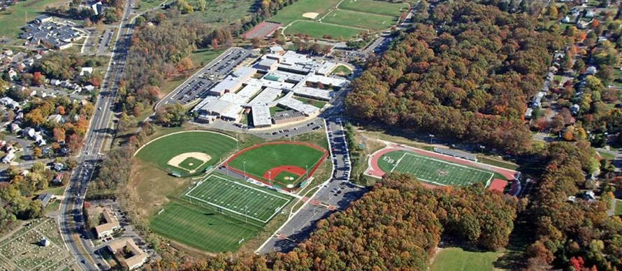
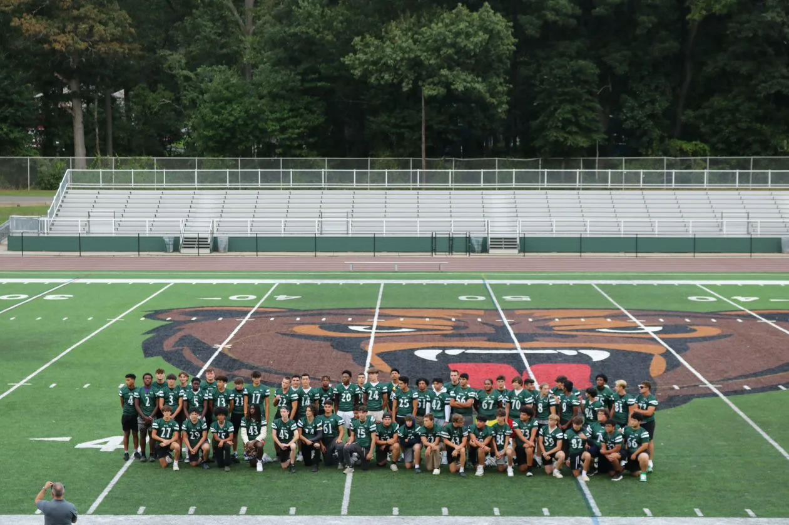
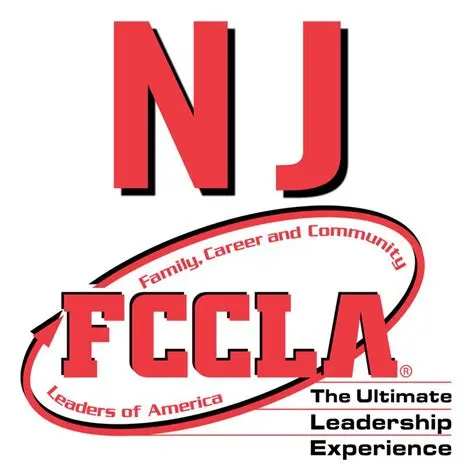
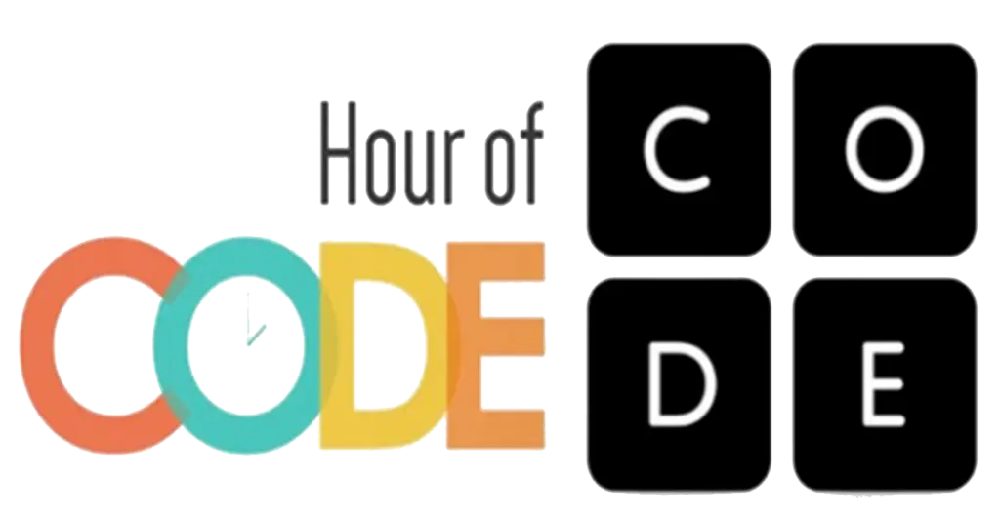

Aarav Batra's
Academics
I attend East Brunswick High School in East Brunswick, New Jersey. I am in the Class of 2025, where I have achieved Honor Roll and Student of the Month.
My GPA is available here,
and my transcript is available here.
My SAT can be viewed here,
which is also officially verified through NCAA ID# 2409420920.
Activities and Awards
Academics
At my alma mater, I have participated for 3 years in the Varsity Football Program as a Quarterback and Long Snapper, 2 years in Future Business Leaders of America (FBLA) as a middle school chapter coordinator, photographer, and chapter member, 1 year in Family, Consumer, and Community Leaders of America (FCCLA) as a chapter member, 1 year in Code Club as an Hour of Code Organizer, and 1 year in Palette Club as the Club Ambassador. I have academically received achievements of Honor Roll and Student of the Month. Other acheivements include receiving the Forward Progress Award from Jonathan Casillas, and a grant award for the Butterfly Kindness Initiative Project from the East Brunwick Education Foundation (EBEF). I interned as an Advanced Research Intern at the New Jersey Cyber Crime Integration Cell (NJCCIC) Subdivision of the New Jersey Office of Homeland Security and Preparedness (NJOHSP).


Football
Athletics
I initially joined the Varsity Football Program as a #56 Guard/Defensive Tackle in my sophomore year. The best use of my potential was as a Quarterback and Long Snapper, so I worked hard to try to earn both positions in my junior year. However, I was only successful at LS. Working hard in the offseason, I continued into my senior year to earn the quarterback position and successfully earned the position as #12 quarterback/LS. I continue to work hard toward a walk-on opportunity at the collegiate level.
Participated Activities and Skills
Future Business Leaders of America
As a part of FBLA, I participated in the NJ State Leadership Conference hosted at Harrah's in Atlantic City. Inspired to create change in my chapter, I spearheaded the creation of a middle school chapter across Hammarskjold Upper Elementary School (HUES) and Churchill Junior High School (CJHS), working closely with administration and the East Brunswick Board of Education (EBBOE). I also worked as a photographer for the chapter, capturing group events, and managing the online presence for the club. As a chapter member, I participated in Regional Competitive Events and Straight to State Events.

Participated Activities and Skills
Family, Career, and Community Leaders of America
As a member of FCCLA, I had the opportunity to immerse myself in various leadership activities that focused on personal development, career exploration, and community service. I participated in hands-on projects and initiatives that promoted family well-being and civic engagement. Through FCCLA, I developed valuable leadership skills by taking part in events that helped me build a deeper connection to the community, while also collaborating with peers on impactful activities that made a difference in both our school and broader community.
Participated Activities and Skills
Code Club
As an active member of Code Club, I contributed to organizing events like "Hour of Code," aimed at introducing coding to younger students. The club encouraged collaboration through coding challenges and hands-on projects, helping participants grow their technical skills. Through my involvement, I gained a deeper understanding of computer science and helped foster a creative environment where students could explore technology, work together on projects, and share their knowledge of programming.

Participated Activities and Skills
Palette Club
In my role as the Club Ambassador for Palette Club, I had the privilege of helping to organize and promote art-related activities throughout the school. The club focuses on providing a creative space for students to explore various forms of artistic expression. One of the highlights of my time with Palette Club was collaborating with my Butterfly Kindness Initiative Project to host a Chalk-to-Walk event. This interactive event, which was featured in the school art magazine, encouraged students to use sidewalk chalk to create colorful, meaningful messages. Palette Club members worked alongside the Butterfly Kindness Initiative to bring the event to life, combining artistic creativity with a spirit of community engagement.
About Me
Big, Fast, Strong.
I am the Class of 2025 at East Brunswick High School. I have participated in many of my High School's programs such as Varsity Football, Future Business Leaders of America (FBLA), Code Club, and Palette Club. My main interests in business, which I plan to explore in the future.
Big
Currently sized at 6' 3", 220 lbs.
Fast
40 yd. time is 5.2 seconds, 1-mile time is my mid-5 minute time.
Strong
I can Bench 185 lbs., Squat 315 lbs., and Deadlift 375 lbs.
Serious Player,
Serious Results.
Class of 2025, QB/LS, 6' 3", 220 lbs., 5.2 sec. 40 yd. Dash, 185 lbs. Bench, 315 lbs. Squat, and 375 lbs. Deadlift.